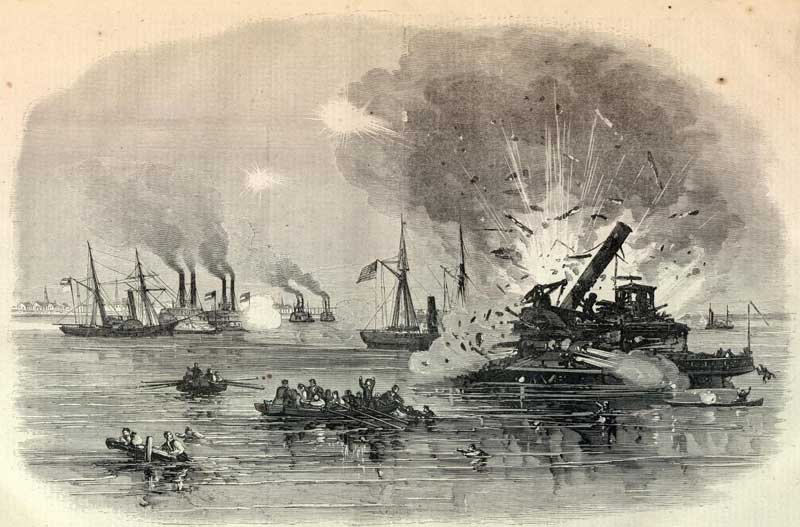

|
At the outset of the Civil War, Galveston was the second
largest city in Texas. Home to 7,000 people, the seaport was
a major exporter of cotton--more than 200,000 bales in
1860. It was also one of the South's leading industrial
centers, with two iron foundries and several facilities
capable of manufacturing maritime products.
During the Civil War, Galveston continued to be
economically important, serving as a major port for
receiving imported goods from blockade runners. Galveston
also had strategic importance to both the Confederacy and
Union; as the South's westernmost major port, it had the
potential to be an important base of operations for the
Union navy's blockade if captured. Despite its significance,
|

An engraving of the naval bombardment
that took place during the Battle of Galveston.
|
Galveston received scant military attention for the early
part of the war. Given the Confederacy's manpower needs,
there were no troops to spare for the town's defense, and by
late 1861 it was guarded only by a handful of local
militiamen. Union ships would occasionally bombard the town,
but they made no serious attempt at capture until October of
1862. Finally, in that month, a small contingent of Union
ships and soldiers managed to overtake Galveston with
relatively little bloodshed.
Once Galveston had been taken, 260 members of the
Massachusetts 42nd Infantry Regiment were sent to fortify
the town and prepare for a Confederate counterattack. That
attack came in the early hours of New Year's Day, 1863. A
small and disorganized group of Confederate troops and ships
under Major John Magruder invaded from both land and sea.
After a brief period of intense fighting, the Battle of
Galveston ended with a Union retreat. The Confederate losses
were 30 killed, 130 wounded. The Union had 21 killed, 36
wounded, and 250 captured.
Confederate troops held the city for the rest of the war.
The last two years of the war were marked by a series of
crises in Galveston - there were two near-revolts of
underfed and undersupplied Confederate troops, and a severe
outbreak of yellow fever in 1864 killed 250 people.
Nonetheless, it continued to be an important port for
blockade runners, with as many as nine or ten ships in port
at any given time. Galveston remained open for business
until it surrendered on June 5, 1865. The town's story
illustrates the logistical difficulties the Union faced in
effectively blockading a coastline as long as the
Confederacy's.
Source: Joan Waugh, ed., Facts on File Encyclopedia of American
History: Civil War and Reconstruction, 1856 to 1869 (New York: Facts on
File, 2003), 145.
|